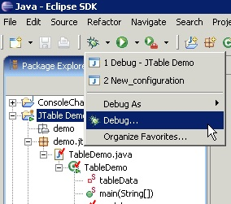
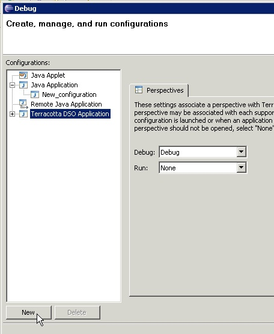

In order for the DSO plugin to distinguish your application as one requiring special treatment at runtime, you can create a special launch configuration to either debug or run your application. Click the Debug or Run toolbar dropdown menu and select the Debug... or Run... item to display the launch configuration editor. Next select the Terracotta DSO Application element and click the New button to create a new launch configuration. Now give the configuration a name and indicate the Main class. All of this is standard for any Eclipse application.
In order for your application to take advantage of DSO, be sure to
use this launch configuration when debugging or running your
application.

